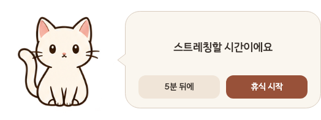
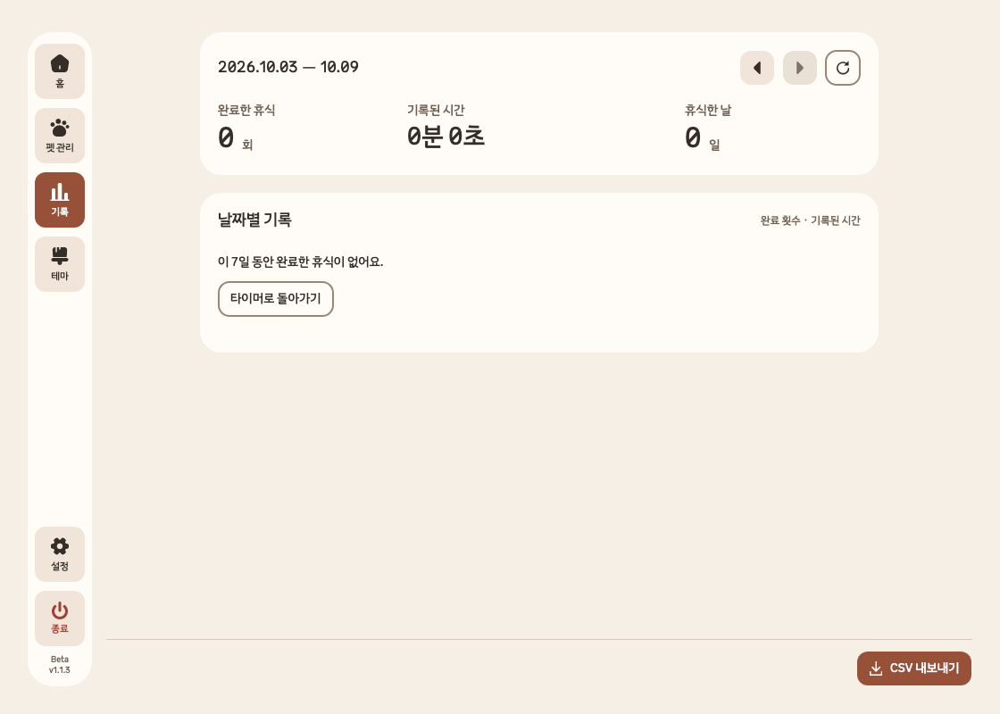

A little detour in your day
쉬어 갈 시간,
좋아하는 펫과.
이미지·영상·3D(GLB)

원하는 펫을
내 화면 곁에.
A little detour in your day
이미지·영상·3D(GLB)
원하는 펫을
내 화면 곁에.
Your own rhythm

A moment to breathe

The little moments

Choose your own companion
 내가 좋아하는 그림.움직임도 함께.
내가 좋아하는 그림.움직임도 함께.Take your next pause
테스트 기준가 · 세금 별도
4,900원
정식 판매 전 · 실제 청구 없음
Beta는 이용 코드를 받은 테스터가 사용할 수 있습니다.